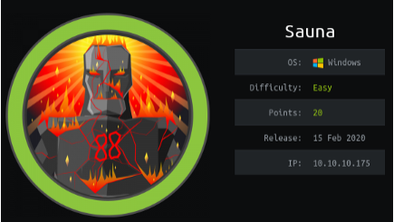
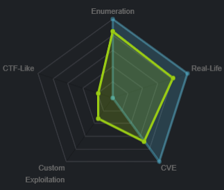

Windows Boxes
sauna
nmapAuto
nmap
ldapsearch
http
vim macro breakdown
initial foothold
kerbroute
run kerbrute with userlist
GetNPUser.py
hashcat BF Kerb TGT
evil win-rm
privesc
winPEAS
bloodhound/sharphound.exe
neo4j console
bloodhound report
find shortest path to Domain Admins
Find principals with DCSync Rights
secretsdump.py
pass the hash to win
user/root
sauna

